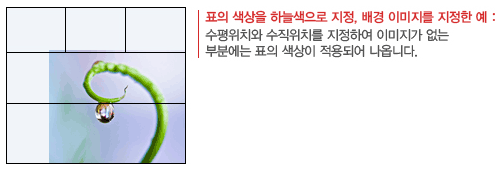

표
새 표 - 일반
01표의 행 개수를 지정합니다.
02표의 열 개수를 지정합니다.
03표의 가로 길이를 지정합니다. 단위는 pixel 입니다.
04표의 세로 길이를 지정합니다. 단위는 pixel 입니다.
05표를 오른쪽으로 이동시켜 줍니다. 10px 단위로 들여쓰기 합니다.
06표의 정렬 형식을 지정합니다.
07표의 ID와 Class 값을 지정합니다.
08셀과 셀의 경계 부분 또는 셀과 표의 테두리의 경계 부분을 분리합니다.
09표의 테두리 선의 모양을 지정합니다.
|
|
|
|
|
|
||||||||||||||||||||
|
|
|
|
|
|
|
|
12표의 테두리 선의 색상을 지정합니다.
13셀의 안쪽과 바깥 경계선 사이의 간격(cellSpacing)을지정합니다.
값이 클수록 두 경계선 사이의 간격이 넓어집니다.

14셀의 안쪽 여백(cellPadding)을 지정합니다. 값이 클수록 셀의 내용과 경계선이 멀어집니다.

15모양, 종류, 두께, 색상을 테두리 제어 기능으로 적용하고 유지 합니다.
16모양, 종류, 두께, 색상을 테두리에 적용합니다. 안쪽 테두리는 유지 합니다.
17모양, 종류, 두께, 색상을 안쪽 테두리에 적용합니다. 위쪽, 왼쪽, 오른쪽, 아래쪽 테두리는 유지 합니다.
18모양, 종류, 두께, 색상을 모두 테두리에 적용합니다.

19표의 제목을 설정합니다.
20표의 설명을 설정합니다.
새 표 - 배경 및 제목 셀
01표의 배경 이미지를 지정합니다.
02표의 배경 이미지의 덧붙임을 설정합니다.
03표의 배경 이미지가 표보다 작을 경우 반복 여부를 결정합니다.
가로방향, 세로방향, 반복하지 않음을 지정할 수 있습니다.
04표에서 배경이미지의 수평 위치를 지정합니다.
05표에서 배경이미지의 수직 위치를 지정합니다.
※ 배경이미지를 반복으로 설정한 경우, 배경이미지의 아래쪽 끝 부분이 표의 위쪽 여백에 나오게 됩니다
06표의 배경색을 지정합니다. 배경 이미지를 지정한 경우, 배경이미지가 색보다 우선순위로 나옵니다.

※ 배경이미지를 반복으로 설정한 경우,
배경이미지의 오른쪽 끝 부분과 아래쪽 끝 부분이 표의 수평, 수직위치 여백 부분에 나옵니다.
그러한 경우 배경색은 보이지 않게 됩니다.
07표의 제목 셀의 Scope(row 또는 col)의 설정여부를결정합니다.
08표의 제목 셀의 스타일을 지정합니다.

새 표 - 템플릿
01표의 행 개수를 지정합니다.
02표의 열 개수를 지정합니다.
03표의 가로 길이를 지정합니다. 단위는 pixel 입니다.
04표의 세로 길이를 지정합니다. 단위는 pixel 입니다.
05제공되는 12개의 표 템플릿 중에서 한 개를 지정합니다.
표 삭제
현재 커서가 위치해 있는 표를 통째로 제거합니다.
가로줄/세로줄 삽입
작성한 표에 새로운 줄을 삽입합니다.
01가로줄을 삽입할 지 세로줄을 삽입할 지 지정합니다.
02삽입할 줄의 개수를 입력합니다.
03가로줄 삽입하기의 경우 현재 셀의 위쪽 또는 아래쪽을 선택하여 새로운 행을 삽입합니다.
세로줄 삽입하기의 경우 현재 셀의 오른쪽 또는 왼쪽을 선택하여 새로운 행을 삽입합니다.
가로줄 삽입
현재 커서가 위치한 셀의 위쪽 또는 아래쪽에 새로운 가로줄을 삽입합니다.
세로줄 삽입
현재 커서가 위치한 셀의 왼쪽 또는 오른쪽에 새로운 새로줄을 삽입합니다.
가로줄 삭제
현재 커서가 위치한 가로줄을 삭제합니다.
세로줄 삭제
현재 커서가 위치한 세로줄을 삭제합니다.
셀 합치기
두 개 이상의 선택된 셀을 하나로 합칩니다.
셀 나누기
한 개의 셀을 여러 개의 셀로 나눕니다.
01셀의 분할 형태를 지정합니다.
02분할 개수를 입력합니다.
가로줄 복제
현재 커서가 위치한 가로줄을 복제하여 아래쪽에 삽입합니다.
선택
표 또는 셀을 선택할 때 마우스를 드래그하지 않고 메뉴에서 선택할 수 있습니다.
표 선택
현재 커서가 위치한 표를 선택합니다.
표 전체 셀 선택
현재 커서가 위치한 표 전체 셀을 선택합니다.
가로줄 선택
현재 커서가 위치한 가로줄을 선택합니다.
세로줄 선택
현재 커서가 위차한 세로줄을 선택합니다.
셀 선택
현재 커서가 위치한 셀을 선택합니다.
셀 크기 조정
여러 개의 셀의 너비 또는 높이를 동일하게 맞출 때 사용합니다.
모든 너비를 같게
선택된 셀의 모든 너비를 동일하게 맞춰줍니다.
모든 높이를 같게
선택된 셀의 모든 높이를 동일하게 맞춰줍니다.
모든 너비/높이 같게
선택된 셀의 모든 너비/높이를 동일하게 맞춰줍니다.
수직 정렬
선택된 셀의 수직 정렬 방식을 설정할 수 있습니다.
위쪽
선택된 셀의 수직 정렬 방식을 위쪽으로 설정합니다.
가운데
선택된 셀의 수직 정렬 방식을 가운데로 설정합니다.
기준선
선택된 셀의 수직 정렬 방식을 기준선 아래쪽으로 설정합니다.
아래쪽
선택된 셀의 수직 정렬 방식을 아래쪽으로 설정합니다.
가로줄 속성
표의 가로줄 전체에 대한 속성을 변경할 때 사용합니다.
01표의 가로줄의 배경색을 지정합니다.
02표의 가로줄의 높이를 지정합니다. 단위는 pixel 입니다.
03셀 안의 내용을 수평 정렬합니다.

04셀 안의 내용을 수직 정렬합니다.

세로줄 속성
표의 세로줄 전체에 대한 속성을 변경할 때 사용합니다.
01표의 세로줄의 배경색을 지정합니다.
02표의 세로줄의 너비를 지정합니다. 단위는 pixel 입니다.
03셀 안의 내용을 수평 정렬합니다.
04셀 안의 내용을 수직 정렬합니다.
표 도구
표를 문자열로 변환
표를 제거하고 표의 각 셀의 내용을 문자열로 나열하여 보여줍니다.
표 속성
표의 일반 속성과 배경 및 제목 셀의 속성을 변경합니다.
※각 속성의 기능은 새 표 설명을 참조하십시오.
셀 속성 - 일반
01셀 안의 내용을 수평 요소로 정렬합니다.
02셀 안의 내용을 수직 요소로 정렬합니다.
03셀 안에서 여러 줄 작성을 허용하지 않습니다.
04셀의 스타일을 제목 셀 스타일로 지정합니다.
05셀의 Scope(row 또는 col)의 설정여부를 결정합니다.
06셀의 테두리 선의 모양을 지정합니다.
|
|
|
|
|
|
||||||||||||||||||||
|
|
|
|
|
|
|
|
09셀의 테두리 선의 두께를 지정합니다.
10모양, 종류, 두께, 색상을 모든 테두리에 적용합니다.
11모양, 종류, 두께, 색상을 위쪽 테두리에 적용하거나 유지합니다.
12모양, 종류, 두께, 색상을 왼쪽 테두리에 적용하거나 유지합니다.
13모양, 종류, 두께, 색상을 오른쪽 테두리에 적용하거나 유지합니다.
14모양, 종류, 두께, 색상을 아래쪽 테두리에 적용하거나 유지합니다.
15멀티 셀을 선택 시 지정한 모양, 종류, 두께, 색상으로 적용합니다.
셀 속성 - 배경
01셀의 배경 이미지를 지정합니다.

배경색 : 셀 색상을 지정함.
배경이미지 : 셀에 배경이미지를 지정함.
배경색 + 배경이미지 : 셀 색상을 지정하고 배경이미지를 넣음.
배경이미지의 수평위치와 수직위치를 지정하여야 배경 색이 적용되어 나옴.
02셀에 지정한 배경이미지의 반복 여부를 결정합니다.
03셀에 지정한 배경이미지의 왼쪽 시작 위치를 지정합니다.
04셀에 지정한 배경이미지의 위쪽 시작 위치를 지정합니다.
계산식
계산식은 가로줄 합계, 세로줄 합계, 가로줄 평균, 세로줄 평균을 구합니다.
01값을 입력할 셀 안에서 오른쪽 마우스를 클릭합니다.
02가로줄 합계, 세로줄 합계, 가로줄 평균, 세로줄 평균을 선택하여 값을 구합니다.